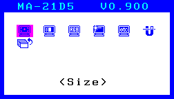
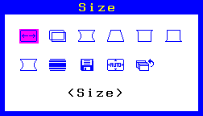
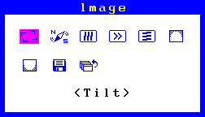
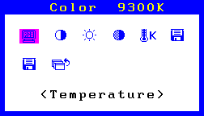
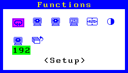
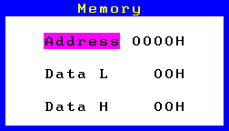

Factory Mode
Factory Mode Menus
The factory mode adjustments are done through the microprocessor
in the monitor. You must get into the Factory Mode for this adjustments.
Main Menu

Select the item in the Main Menu and then adjust each of them
in the adjustment menus.
More details are explained later in this section.
Sub menus
Size
 |
(Item)
|
Image
 |
- (Item)
|
Color
 |
- (Item)
|
Do not use "Temp. Param." icon not to change the parameter
of each color temperature. |
|
System
 |
- (Item)
|
Functions
 |
(Item)
|
When the "Size Delete All" function is performed,
the Factory Set Data (Default Settings) will be deleted.
When the "ColorCopy" is performed, the color data saved
(6500K or 10000K) is copied.
Do not use the "Contrast Save" icon not to change
the default settings in the Contrast/Brightness. |
|
|
Degauss |
(Item)
|
- The "Degauss" icon is changed to the "Memory"
icon only for a few seconds after the degauss is finished. Select
the "Memory" icon during displaying the " Memory"
icon. Then, the "Memory" menu is displayed.

- Use the Enter key on the Memory menu to return to the main
menu.
- Use the Up and Down arrow keys on the Memory menu to select
Address (see diagram below), and then use the Left and Right
arrow keys to set and change the address.
- Data
Use the Up and Down arrow keys on the Memory menu to select
the Data (L) (see diagram at bottom-left) or the Data (H) (see
diagram at bottom-right), and use the Left and Right arrow keys
to set and change data.
Data is saved at any time, whenever it is changed.
- Indication of informations
- The monitor's information is displayed on OSD title bar part
by pressing the up-arrow control button at main menu.
|
Model name, Firmware version |
|
|
|
Brand, Language |
|
|
|
Accumulation use time |
|
|
|
Infornation of Input signal |
|
The content of signal information is as follows.
0 bit: Polarity of horizontal sync. signal (0: positive, 1:
negative)
1 bit: Polarity of vertical sync. signal (0: positive, 1: negative)
2 bit: Composite signal (0: non-composite signal, 1: composite
signal) |
|
display ADX (AD-X, Time from Power Supply ON, Bright-X) |
|
|
|
X Pro (Set value, Present value) |
|
|
- WarningBar is indicated under OSD.
- The yellow line is displayed on OSD when the protectcansel
is performed.
- The red line is displayed on OSD when the X pro is not set
(255) or the setting value is less than 10.
- The green line is displayed on OSD when the RestorationSave
is not performed.
|